Loading required package: acs
Loading required package: XML
Attaching package: 'acs'
The following object is masked from 'package:dplyr':
combine
The following object is masked from 'package:base':
apply
Code
library(choroplethrMaps)library(ggridges)
Code
drink <-read.csv('500_Cities__Binge_drinking_among_adults_aged___18_years.csv')# dropping the columns that are the samedrink <- drink |>select(-c(Year, DataSource, Category, Measure, Data_Value_Unit, Data_Value_Type,CategoryID,MeasureId, Short_Question_Text, Data_Value_Footnote_Symbol, Data_Value_Footnote)) |>rename(BingeDrinkingPrv = Data_Value, PrvType = DataValueTypeID)drink <- drink |>drop_na(BingeDrinkingPrv)# reading in data to merge inregion =read.csv('us census bureau regions and divisions.csv')age =read.csv('sc-est2017-agesex-civ.csv')
# creating dataset by statestates <- ages_drink|>group_by(State)|>summarise(total_pop =sum(PopulationCount)/1000000, avg_age =max(avg), meanPrv =mean(BingeDrinkingPrv), Region =max(Region))states <- states |>mutate(Region =fct_reorder(Region, meanPrv)) combined <- combined |>mutate(Region =factor(Region))combined <- combined |>mutate(Region =fct_reorder(Region, BingeDrinkingPrv))
3.1 Distribution of Data
3.1.1 Histograms
Code
# all dataggplot(combined, aes(x = BingeDrinkingPrv)) +geom_histogram(aes(y =after_stat(density)), color ="lightsteelblue4",fill ="lightskyblue1", binwidth =0.5) +geom_function(fun = dnorm, col ="mediumvioletred",args =list(mean(combined$BingeDrinkingPrv), sd(combined$BingeDrinkingPrv)),lwd =1) +geom_density(col="saddlebrown", lwd =1)+labs(title ="Distribution of Binge Drinking Across US Cities and Localities",x="Prevalence of Binge Drinking (%)",y="Density")
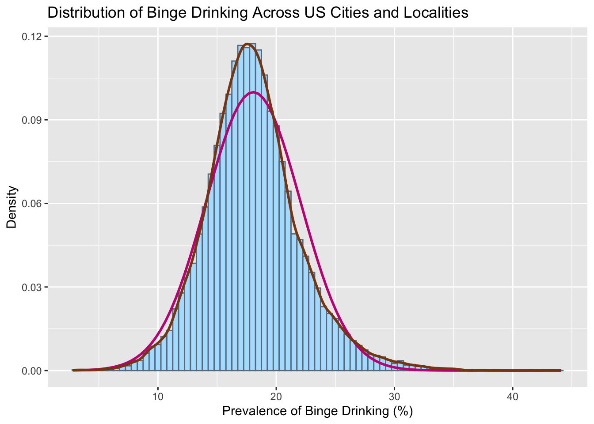
We begin by plotting a histogram of the entirety of the data and overlaying a normal density curve on top of it. The data looks roughly normal as the density line (pink) is similar to the normal distribution line (brown).
Code
# all facetedggplot(combined, aes(x = BingeDrinkingPrv)) +geom_histogram(aes(y =after_stat(density)), color ="lightsteelblue4",fill ="lightskyblue1", binwidth =0.5) +geom_function(fun = dnorm, col ="mediumvioletred",args =list(mean(combined$BingeDrinkingPrv), sd(combined$BingeDrinkingPrv)),lwd =1) +geom_density(col="saddlebrown", lwd =1)+labs(title ="Distribution of Binge Drinking Across US Cities and Localities by Region", x="Prevalence of Binge Drinking (%)",y="Density") +facet_wrap(vars(Region))
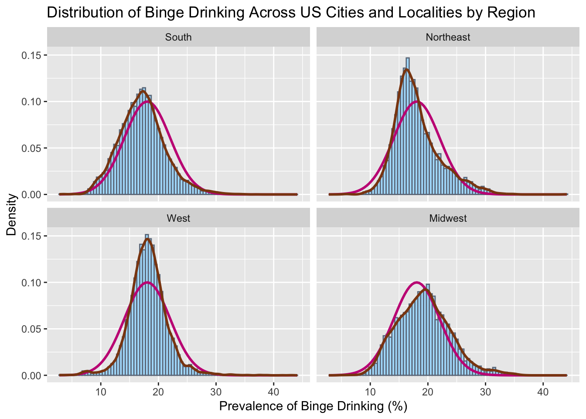
To further analyze the differences in spread of each region, we plot density histograms for binge drinking and compare them to normal distributions (pink). In this graph, we see that all the regions have distributions that are approximately normal, however the West is a little narrower and the Northeast seems to be right skewed. To further test this theory, we conduct a schapiro-wilk test for each region.
Shapiro-Wilk normality test
data: Northeast$meanPrv
W = 0.85843, p-value = 0.09218
Code
South <- states|>filter(Region=='South')|>select(meanPrv)shapiro.test(South$meanPrv)
Shapiro-Wilk normality test
data: South$meanPrv
W = 0.9729, p-value = 0.867
Code
West <- states|>filter(Region=='West')|>select(meanPrv)shapiro.test(West$meanPrv)
Shapiro-Wilk normality test
data: West$meanPrv
W = 0.95663, p-value = 0.7012
The shapiro-wilks test was tested on the mean prevalence for each state for each region. This is because there was too much data to test normality based on counties. As we can see, we can not reject the assumption that these distributions are normal since their p-values lie above the 0.05 threshhold. It should be noted however that the northeast was close, and would have been rejected under a higher significance level (10%), but for our current parameters, we will say that all our distributions are normal or approximately normal.
Code
# By stateggplot(states, aes(x = meanPrv)) +geom_histogram(aes(y =after_stat(density)), color ="lightsteelblue4",fill ="lightskyblue1", binwidth =0.5) +geom_function(fun = dnorm, col ="mediumvioletred",args =list(mean(states$meanPrv), sd(states$meanPrv)),lwd =1) +geom_density(col="saddlebrown", lwd =1)+labs(title ="Distribution of Mean Binge Drinking Percentage of All States",x="Mean Prevalence of Binge Drinking (%)",y="Density")
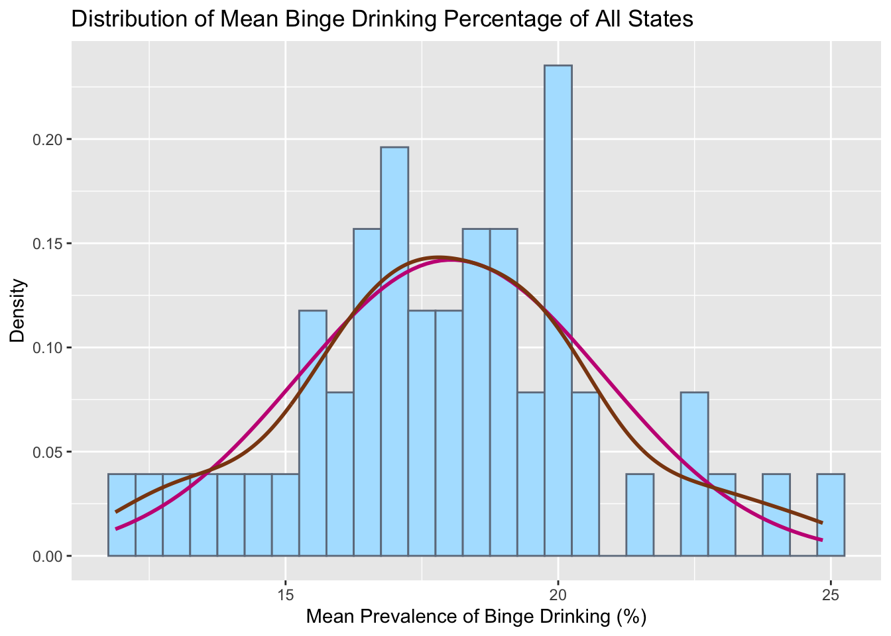
Plotting mean prevalence of each State gives a roughly normal distribution but with the existence of gaps and multiple different peaks puts this hypothesis in question. So we test this using a schapiro-wilk test.
Code
shapiro.test(states$meanPrv)
Shapiro-Wilk normality test
data: states$meanPrv
W = 0.98947, p-value = 0.9288
The null hypothesis can not be rejected. Therefore the normality assumption of the data can be given for mean prevalence of binge drinking per state. This makes sense since the expected value of means is meant to converge to a normal distribution
3.1.2 Boxplots
Code
# allggplot(combined, aes(x=BingeDrinkingPrv, y=Region, fill=Region))+geom_boxplot()+geom_density_ridges(alpha =0.5) +scale_fill_brewer(palette="Set2") +labs(title ="Distribution of Binge Drinking Across US Cities and Localities by Region",x="Prevalence of Binge Drinking (%)")
Picking joint bandwidth of 0.564
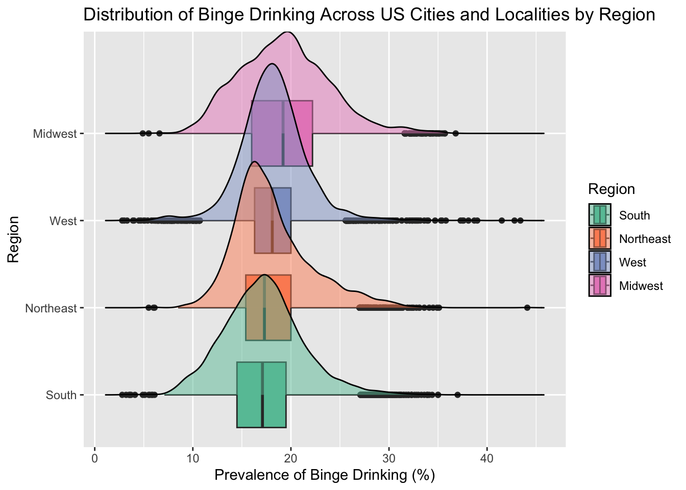
Since we are interested in the distribution of binge drinking by region, we first facet and draw ridgeline boxplots. We can see that the top 3 regions have similar peaking modes, but the midwest seems to be slightly shifted to the right. We can also see that all the regions have a wide spread with a significant amount of outliers.
3.2 Cleveland Dot Plot
Code
ggplot(states, aes(x = meanPrv, y =fct_reorder(State, meanPrv))) +geom_point(aes(colour = Region)) +facet_grid(fct_reorder(Region, meanPrv, .desc=TRUE) ~ ., scales ="free_y", space ="free_y") +ggtitle("Avg. Binge Drinking Prevalence per US State") +ylab("") +xlab("Average Binge Drinking Prevalence Percentage")+theme_linedraw() +scale_colour_brewer(palette ="Set2", limits =c("South", "Northeast", "West", "Midwest"))+theme(legend.position ="none")
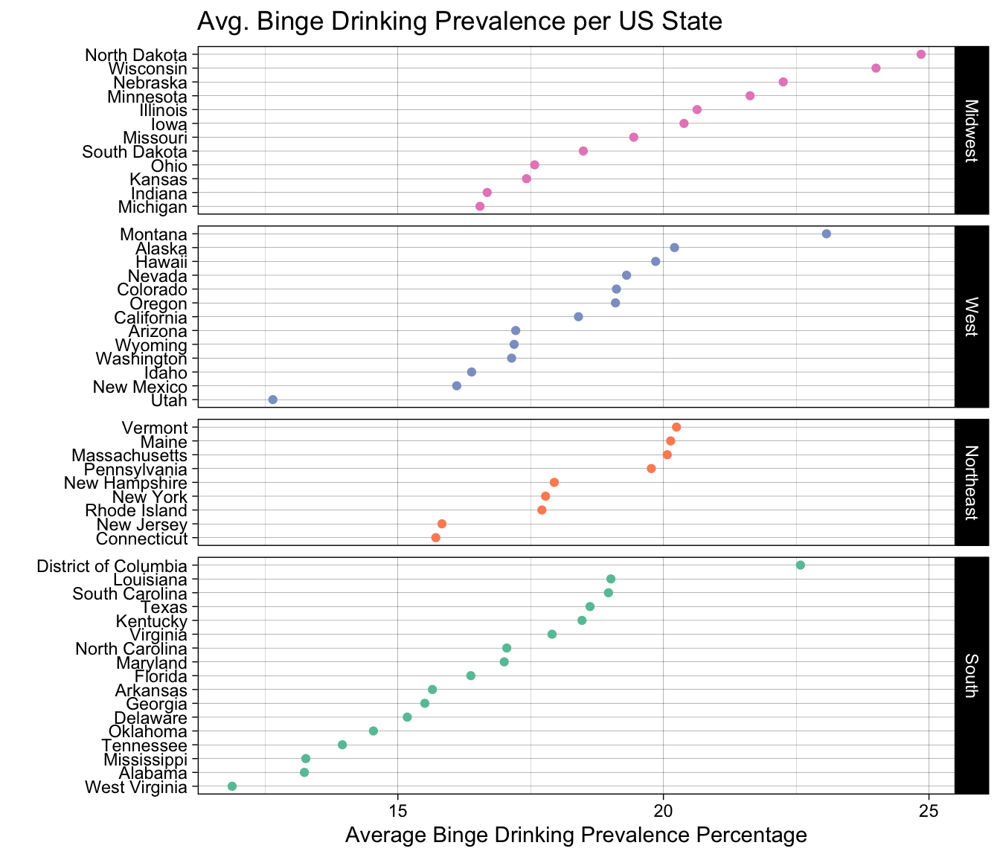
Here we show a Cleveland Dot Plot faceted by region. Looking at each individual graph shows us ranking of binge drinking prevalence across the states. Looking across graphs, we can see a slight ordering that goes south- northeast- west- midwest. We can also see some outliers in the data such as Utah, which makes sense since there exists a large population of mormons in the area and they dont not drink alcohol as part of their religion.
3.3 Continuous Variable Comparisons
3.3.1 Heatmaps
Code
ggplot(states, aes(meanPrv, total_pop)) +geom_hex(bins=8) +scale_fill_distiller(palette ="Blues", direction=1) +theme_classic(18) +ggtitle("Total Population and Mean Prevalence per State") +labs(x="Mean Prevalence of Binge Drinking (%)",y="Total Population (Millions)")
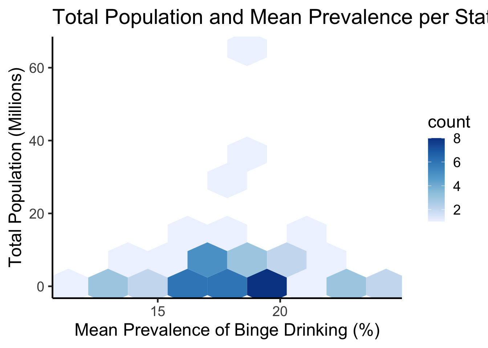
Code
ggplot(states, aes(meanPrv, avg_age)) +geom_hex(bins=8) +scale_fill_distiller(palette ="Blues", direction=1) +theme_classic(18) +ggtitle("Average Age and Mean Prevalence per State") +labs(x="Mean Prevalence of Binge Drinking (%)",y="Age")
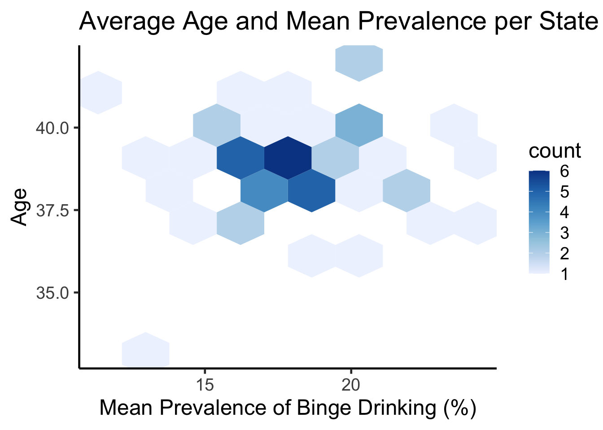
3.3.2 Contour Lines
Code
ggplot(states, aes(meanPrv, total_pop)) +geom_density_2d(bins=5, linewidth=1, color="royalblue1") +geom_point() +ggtitle("Contour Line and Scatterplot of Population and Binge Drinking") +labs(x="Mean Prevalence of Binge Drinking (%)",y="Total Population (Millions)")
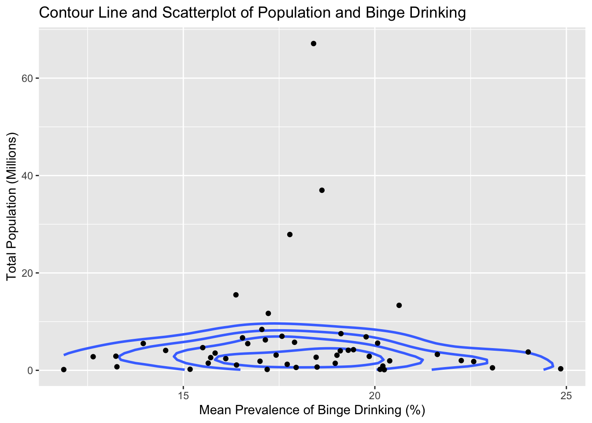
Code
ggplot(states, aes(meanPrv, avg_age)) +geom_density_2d(bins=5, linewidth=1, color="royalblue1") +geom_point() +ggtitle("Contour Line and Scatterplot of Age and Binge Drinking") +labs(x="Mean Prevalence of Binge Drinking (%)",y="Age")
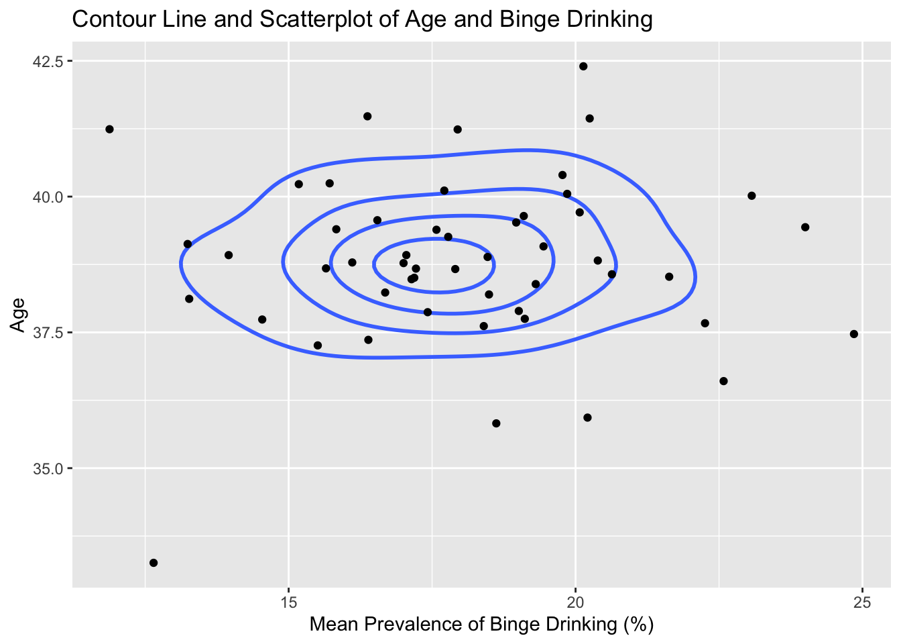
3.4 Parallel Coordinates Plot
Code
cus_states = statescolnames(cus_states)[4] ='Binge Drinking Prevalence'colnames(cus_states)[2] ='Total Populationm (Millions)'colnames(cus_states)[3] ='Age'parcoords(cus_states, rownames = F , brushMode ="1D-axes" , reorderable = T , queue = T )
Displayed is an interactive parallel coordinates plot with the states, regions, prevalence, population and age. Highlighting specific parts of the graph such as the slider from the top of mean prevalence till 20, we can see that the majority of those lines come from the Midwest region. We would have liked to include splining, but the interactive parcoords doesn’t support this feature. but the information gained by interactively subsetting the data was valuable enough that we thought to include it.
3.5 Choropleths
Code
# binge drinking choroplethdf_chlor <- states|>select(-Region)|>transmute(region =tolower(`State`), value = meanPrv)state_choropleth(df_chlor,title ="State Binge Drinking Prevalence",legend ="Average Prevalence of Binge Drinking (%)")
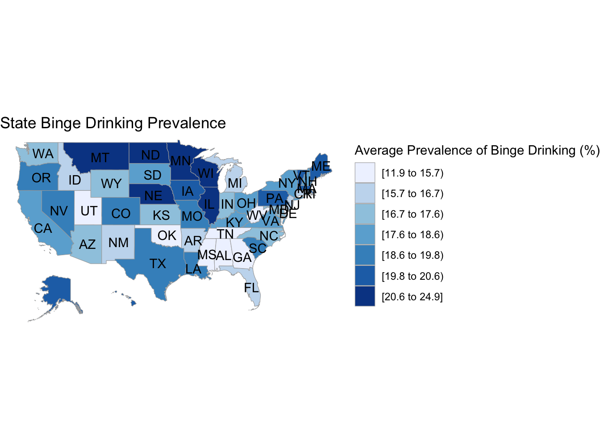
Code
# age choroplethdf_chlor2 <- states|>select(-Region)|>transmute(region =tolower(`State`), value = avg_age)state_choropleth(df_chlor2,title ="Average Age per State",legend ="Average Age")
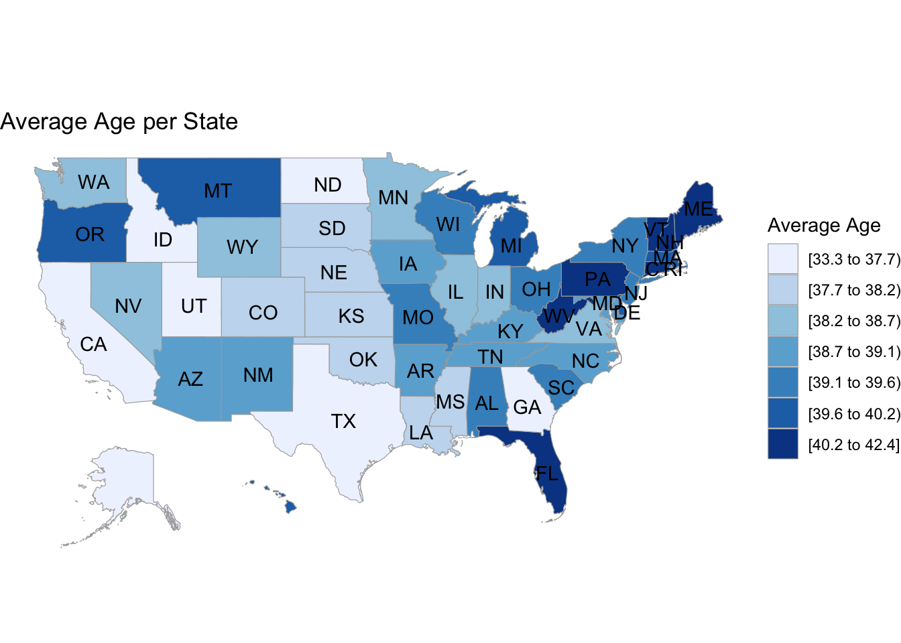
Code
# population choroplethdf_chlor3 <- states|>select(-Region)|>transmute(region =tolower(`State`), value = total_pop)state_choropleth(df_chlor3,title ="Total Population per State",legend ="Total Population (Millions)")
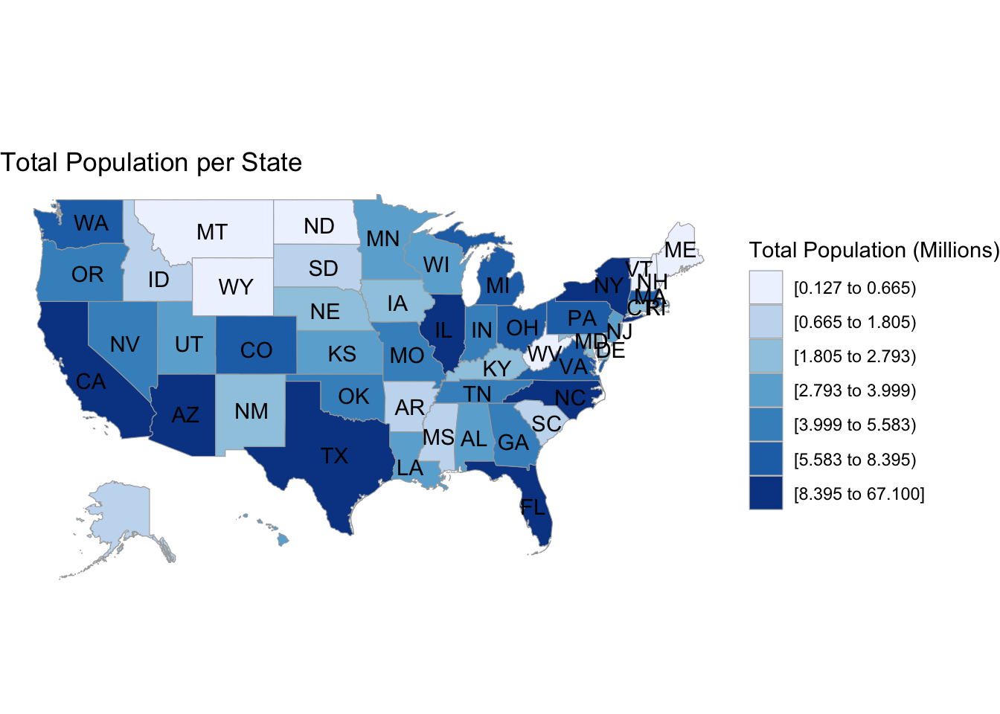
The first choropleth shows the percentage of binge drinkers in every state. We note that the highest percentages correspond with the northern areas of the country, which are usually colder. This could imply a correlation between binge drinking and weather, but that would need to be explored further with an additional data set of the weather in the 50 states. The main issue with choropleths is that a larger shaded area doesn’t necessarily mean that there are more binge drinkers in general, its just a calculation of the percentage relative to the population, and we show that difference by including an additional choropleth for population spread and note that there isn’t much overlap between population size and binge percentage. We also include one for ages, and we see a slight negative correlation where the areas with lower ages correspond to higher average drinking rates and vice versa, but its difficult to tell just by looking at two seperate graphs.